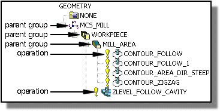

预计完成这堂课需要：11–16 分钟
工序导航器允许您查看并管理工序、程序、加工方法、几何体以及刀具间的关系。它允许您定义包含公共参数的父项组，这些公共参数可以被多个工序使用。
工序导航器使用树形结构来组织父项组合工序，父项组就是一个包含其它对象的对象，父项组用于定义可被工序继承的参数。

在上图中，WORKPIECE 继承其父项 MCS_MILL 的参数，MILL_AREA 继承其父项 WORKPIECE 的参数，而所有工序都继承 MILL_AREA 中的参数。
工序导航器使用面板来显示与编辑工序的相依性和继承状态，相依性面板显示选定对象的子项和父项组，细节面板允许您查看与编辑选定对象的参数的继承状态。